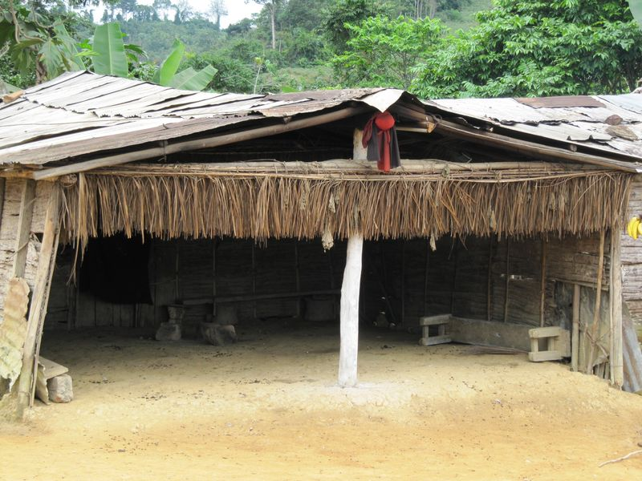

Danses traditionnelles, musique au rythme du mongongo, contes et gastronomie locale ont rassemblé la population autour du patrimoine de la province. Plus de 2 000 visiteurs ont fait le déplacement tout un week-end.
Le festival a réuni les communautés Bandjabi, Adouma, Mitsogho, Pouvi et Massango, chacune présentant ses chants, ses danses initiatiques et son artisanat. Les troupes venues des quatre départements de la province ont rivalisé de créativité sur la grande scène installée en centre-ville.
Valoriser un héritage vivant
Au programme également : démonstrations de tressage et de sculpture, dégustations de nyembwe et de saka-saka, et un espace dédié aux jeunes talents. Plusieurs artisans ont pu écouler leurs créations et nouer des contacts pour de futures commandes.
Fort de son succès, l'événement s'inscrit désormais comme un rendez-vous annuel du calendrier culturel de Koula-Moutou, au service du rayonnement et de la transmission des traditions de l'Ogooué-Lolo.